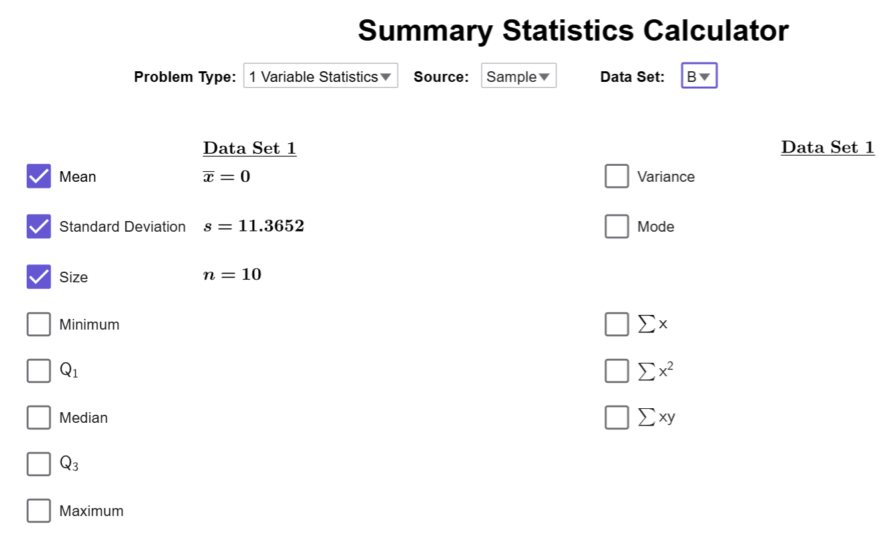

How to Calculate the Deviations of a Dataset
Deviation measures how far a data point is from the mean of a data set. It helps determine whether a specific value is above or below the average and by how much. Positive deviations indicate values larger than the mean, while negative deviations show values smaller than the mean. In this section, we’ll explore how to calculate deviation and understand its significance with a practical example.
Deviation
What is Deviation?
The deviation of a data point \( x \) in a distribution is the difference between the value of the data point and the mean of the data set. The formula for deviation is:
Formula for Deviation
- Population Deviation: \(\text{deviation} = x - \mu\)
- Sample Deviation: \(\text{deviation} = x - \bar{{x}}\)
In both cases, in words, we have that \[\text{deviation }= \text{ data }-\text{ mean.}\]
Notes on Deviation
- If the deviation is positive, the data point is larger than the average value.
- If the deviation is negative, the data point is smaller than the average value.
Example
The salaries for a random sample of 10 individuals is given below.
| Salaries (in thousands of dollars) | |||||||||
|---|---|---|---|---|---|---|---|---|---|
| 40 | 23 | 41 | 50 | 49 | 32 | 41 | 59 | 52 | 58 |
- Part A: Calculate the deviation for each salary in the data set.
- Part B: Use the Summary Statistics Calculator to find the average deviation for the data set.
Solution
- Part A:
First, we have to use the Summary Statistics Calculator to compute the average value of the data:
Now, we manually subtract the data to find all the deviations:
Salaries and Their Deviations Salary (in Thousands) Deviation (\( x - 44.5 \)) 40 40 - 44.5 = -4.5 23 23 - 44.5 = -21.5 41 41 - 44.5 = -3.5 50 50 - 44.5 = 5.5 49 49 - 44.5 = 4.5 32 32 - 44.5 = -12.5 41 41 - 44.5 = -3.5 59 59 - 44.5 = 14.5 52 52 - 44.5 = 7.5 58 58 - 44.5 = 13.5 - Part B:
To find the average deviation, we will create a second column manually in the tool, putting deviations in B1 and typing the deviations in the cells below B1:
Close the spreadsheet, and the change the column to B in the Calculator. The average will be recalculated, and it will tell us that \(\overline{{x}}=0\)!

It turns out, the average value of the deviations of ANY dataset is ALWAYS 0! So, the idea of an average deviation from the mean is not very useful.
Note
If you think about our example with the stacks of dots we did when we learned about the mean,
the number of dots that were above the mean height is equal to the number of dots missing in
the below-average stacks. Deviations count the number of dots that are missing from a
stack as a negative number and the number of extra dots as positive numbers.
In order to get stacks of all the same heights, the sum of the positive numbers must
cancel out the sum of the negative numbers. Remember the when you cancel things with
addition and subtraction, the sum is always zero! And zero divided by any number is
0. So the average value will always be 0, no matter what dataset we use!
$$\tag*{\(\blacksquare\)}$$
Conclusion
Deviation helps identify how individual data points relate to the mean, but its usefulness is limited because the sum of all deviations always equals zero. Therefore, deviation alone cannot measure variation in a dataset. In the next section, we’ll introduce the standard deviation, which overcomes this limitation and provides a more effective measure of variability.